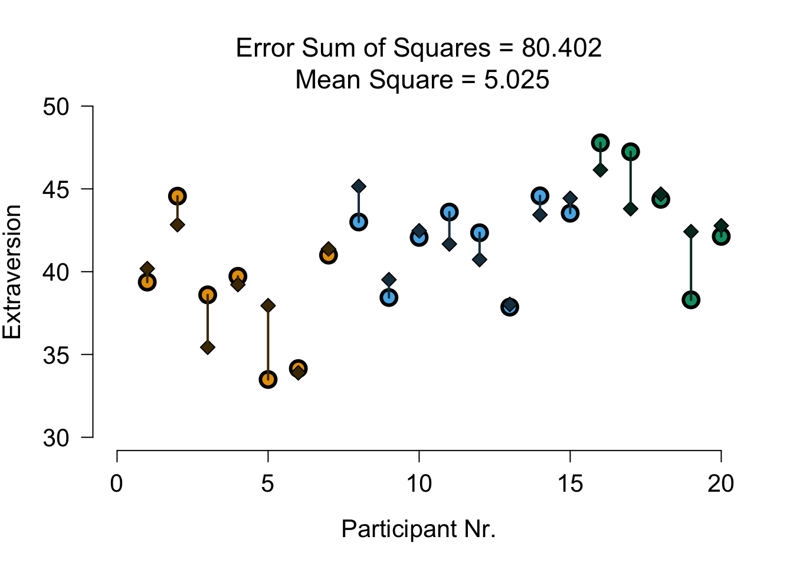

# Simulate data
n <- 20
k <- 3
nationality <- round(runif(n,1,k),0)
nationality <- factor(nationality)
levels(nationality) <- c("Dutch", "German", "Belgian")
mu.covar <- 8
sigma.covar <- 1
openness <- round(rnorm(n,mu.covar,sigma.covar),2)
# Create dummy variables
dummy.1 <- ifelse(nationality == "German", 1, 0)
dummy.2 <- ifelse(nationality == "Belgian", 1, 0)
# Set parameters
b.0 <- 15 # initial value for group 1
b.1 <- 3 # difference between group 1 and 2
b.2 <- 4 # difference between group 1 and 3
b.3 <- 3 # Weight for covariate
# Create error
error <- rnorm(n,0,1)ANCOVA
ANCOVA
Analysis of covariance (ANCOVA) is a general linear model which blends ANOVA and regression. ANCOVA evaluates whether population means of a dependent variable (DV) are equal across levels of a categorical independent variable (IV) often called a treatment, while statistically controlling for the effects of other continuous variables that are not of primary interest, known as covariates (CV).
ANCOVA
Determine main effect while correcting for covariate
- 1 dependent variable
- 1 or more independent variables
- 1 or more covariates
A covariate is a variable that can be a confounding variable biasing your results. By adding a covariate, we reduce error/residual in the model.
Assumptions
- Same as ANOVA
- Independence of the covariate and treatment effect §13.4.1.
- No difference on ANOVA with covar and independent variable
- Matching experimental groups on the covariate
- Homogeneity of regression slopes §13.4.2.
- Visual: scatterplot dep var * covar per condition
- Testing: interaction indep. var * covar
Independence of the covariate and treatment effect

Data example
We want to test the difference in national extraversion but want to also account for openness to experience.
- Dependent variable: Extraversion
- Independent variabele: Nationality
- Dutch
- German
- Belgian
- Covariate: Openness to experience
Simulate data
Define the model
\({extraversion} = {model} + {error}\)
\({model} = {independent} + {covariate} = {nationality} + {openness}\)
Formal model
\(y = b_0 + b_1 {dummy}_1 + b_2 {dummy}_2 + b_3 covar\)
# Define model
extraversion <- b.0 + b.1 * dummy.1 + b.2 * dummy.2 + b.3 * openness + errorDummies
The data
Observed group means
aggregate(extraversion ~ nationality, data, mean) nationality extraversion
1 Dutch 38.67000
2 German 42.16625
3 Belgian 43.79800Model fit without covariate
What are the beta coefficients when we fit a model that only has “nationality” as a predictor variable?
fit.group <- lm(extraversion ~ nationality, data); fit.group
Call:
lm(formula = extraversion ~ nationality, data = data)
Coefficients:
(Intercept) nationalityGerman nationalityBelgian
38.670 3.496 5.128 fit.group$coefficients[2:3] + fit.group$coefficients[1] nationalityGerman nationalityBelgian
42.16625 43.79800 \({Dutch} = 38.67 \> {German} = 42.16625 \> {Belgian} = 43.798\)
Model fit with only covar
What are the beta coefficients when we fit a model that only has the covariate as predictor variable?
fit.covar <- lm(extraversion ~ openness, data)
fit.covar
Call:
lm(formula = extraversion ~ openness, data = data)
Coefficients:
(Intercept) openness
15.667 3.185 Model fit with all predictor variables (factor + covariate)
fit <- lm(extraversion ~ nationality + openness, data); fit
Call:
lm(formula = extraversion ~ nationality + openness, data = data)
Coefficients:
(Intercept) nationalityGerman nationalityBelgian openness
15.965 2.769 4.181 2.881 fit$coefficients[2:3] + fit$coefficients[1] nationalityGerman nationalityBelgian
18.73401 20.14609 \({Dutch} = 15.96 \> {German} = 18.73 \> {Belgian} = 20.14\)
So what do we predict for each participant??
For a German with a score of 8 on Openness:
fit <- lm(extraversion ~ nationality + openness, data); fit$coefficients (Intercept) nationalityGerman nationalityBelgian openness
15.964661 2.769346 4.181430 2.880866 unname(fit$coefficients[1] + 1 * fit$coefficients[2] + 0 * fit$coefficients[3] +
8 * fit$coefficients[4])[1] 41.78093How about a Belgian with 6 Openness?
Total variance
What is the total variance?
\({MS}_{total} = s^2_{extraversion} = \frac{{SS}_{extraversion}}{{df}_{extraversion}}\)
ms.t <- var(data$extraversion); ms.t[1] 11.97756ss.t <- var(data$extraversion) * (length(data$extraversion) - 1); ss.t[1] 227.5737The data
Total variance visual

Model variance group
The model variance consists of two parts. One for the independent variable and one for the covariate. Lets first look at the independent variable.
Model variance group visual

Model variance covariate visual

Model variance group and covariate
Model variance group and covariate visual

Error variance with covariate

Sums of squares
SS.model <- with(data, sum((model - grand.mean)^2))
SS.error <- with(data, sum((extraversion - model)^2))
# Sums of squares for individual effects
SS.model.group <- with(data, sum((model.group - grand.mean)^2))
SS.model.covar <- with(data, sum((model.covar - grand.mean)^2))
SS.covar <- SS.model - SS.model.group; SS.covar ## SS.covar corrected for group[1] 121.8463SS.group <- SS.model - SS.model.covar; SS.group ## SS.group corrected for covar[1] 54.65778F-ratio
\(F = \frac{{MS}_{model}}{{MS}_{error}} = \frac{{SIGNAL}}{{NOISE}}\)
n <- 20
k <- 3
df.model <- k - 1
df.error <- n - k - 1
MS.model <- SS.group / df.model
MS.error <- SS.error / df.error
fStat <- MS.model / MS.error
fStat[1] 21.74406\(P\)-value
library("visualize")
visualize.f(fStat, df.model, df.error, section = "upper") Alpha & Power
Power becomes quite abstract when we increase the complexity (i.e., number of predictors) of our models. We can make an F-distribution that symbolizes the alternative distribution by shifting the distribution more to the right (although the interpretability becomes pretty murky..)
Adjusted/marginal means
Marginal means are estimated group means, while keeping the covariate equal across the groups
These are then the means that are used for follow-up tests, such as contrasts and post hoc tests
See also this blogpost I wrote a while ago
Adjusted/marginal means
# Add dummy variables
data$dummy.1 <- ifelse(data$nationality == "German", 1, 0)
data$dummy.2 <- ifelse(data$nationality == "Belgian", 1, 0)
# b coefficients
b.cov <- fit$coefficients["openness"]; b.int = fit$coefficients["(Intercept)"]
b.2 <- fit$coefficients["nationalityGerman"]; b.3 = fit$coefficients["nationalityBelgian"]
# Adjustment factor for the means of the independent variable
data$mean.adj <- with(data, b.int + b.cov * mean(openness) + b.2 * dummy.1 + b.3 * dummy.2)
aggregate(mean.adj ~ nationality, data, mean) nationality mean.adj
1 Dutch 39.19740
2 German 41.96675
3 Belgian 43.37883aggregate(extraversion ~ nationality, data, mean) nationality extraversion
1 Dutch 38.67000
2 German 42.16625
3 Belgian 43.79800